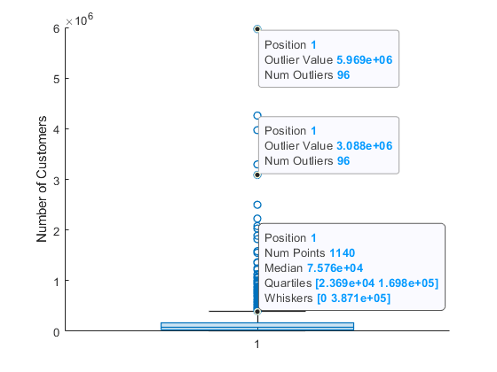

boxchart
Box chart (box plot)
Syntax
Description
Vector and Matrix Data
boxchart( creates a box chart, or box
plot, for each column of the matrix ydata)ydata. If
ydata is a vector, then boxchart creates a
single box chart.
Each box chart displays the following information: the median, the lower and upper quartiles, any outliers (computed using the interquartile range), and the minimum and maximum values that are not outliers. For more information, see Box Chart (Box Plot).
boxchart(
groups the data in the vector xgroupdata,ydata)ydata according to the unique values in
xgroupdata and plots each group of data as a separate box chart.
xgroupdata determines the position of each box chart along the
x-axis. ydata must be a vector, and
xgroupdata must have the same length as
ydata.
boxchart(___,'GroupByColor',
uses color to differentiate between box charts. The software groups the data in the vector
cgroupdata)ydata according to the unique value combinations in
xgroupdata (if specified) and cgroupdata, and
plots each group of data as a separate box chart. The vector
cgroupdata then determines the color of each box chart.
ydata must be a vector, and cgroupdata must
have the same length as ydata. Specify the
'GroupByColor' name-value pair argument after any of the input
argument combinations in the previous syntaxes.
Table Data
boxchart(
creates a box chart of the data in tbl,xvar,yvar)yvar grouped by the data in
xvar, where xvar and yvar
are variables from the table tbl. To plot one data set, specify one
variable for xvar and one variable for yvar. To plot
multiple data sets, specify multiple variables for xvar,
yvar, or both. If both arguments specify multiple variables, they
must specify the same number of variables. (since R2025a)
Additional Options
boxchart(___,
specifies additional chart options using one or more name-value pair arguments. For
example, you can compare sample medians using notches by specifying
Name,Value)'Notch','on'. Specify the name-value pair arguments after all other
input arguments. For a list of properties, see BoxChart Properties.
b = boxchart(___)BoxChart objects. If you do not specify
cgroupdata, then b contains one object. If you
do specify it, then b contains a vector of objects, one for each
unique value in cgroupdata. Use b to set
properties of the box charts after creating them. For a list of properties, see BoxChart Properties.
Examples
Create a single box chart from a vector of ages. Use the box chart to visualize the distribution of ages.
Load the patients data set. The Age variable contains the ages of 100 patients. Create a box chart to visualize the distribution of ages.
load patients boxchart(Age) ylabel('Age (years)')

The median patient age of 39 years is shown as the line inside the box. The lower and upper quartiles of 32 and 44 years are shown as the bottom and top edges of the box, respectively. The whiskers, or lines that extend below and above the box, have endpoints that correspond to the youngest and oldest patients. The youngest patient is 25 years old, and the oldest is 50 years old. The data set contains no outliers, which would be represented by small circles.
You can use data tips to get a summary of the data statistics. Hover over the box chart to see the data tip.
Use box charts to compare the distribution of values along the columns and the rows of a magic square.
Create a magic square with 10 rows and 10 columns.
Y = magic(10)
Y = 10×10
92 99 1 8 15 67 74 51 58 40
98 80 7 14 16 73 55 57 64 41
4 81 88 20 22 54 56 63 70 47
85 87 19 21 3 60 62 69 71 28
86 93 25 2 9 61 68 75 52 34
17 24 76 83 90 42 49 26 33 65
23 5 82 89 91 48 30 32 39 66
79 6 13 95 97 29 31 38 45 72
10 12 94 96 78 35 37 44 46 53
11 18 100 77 84 36 43 50 27 59
Create a box chart for each column of the magic square. Each column has a similar median value (around 50). However, the first five columns of Y have greater interquartile ranges than the last five columns of Y. The interquartile range is the distance between the upper quartile (top edge of the box) and the lower quartile (bottom edge of the box).
boxchart(Y) xlabel('Column') ylabel('Value')

Create a box chart for each row of the magic square. Each row has a similar interquartile range, but the median values differ across the rows.
boxchart(Y') xlabel('Row') ylabel('Value')

Since R2025a
Load the tsunami data set into a table. Create box charts for the Longitude and Latitude variables, and label the groups with the variable names.
tbl = readtable("tsunamis.xlsx"); boxchart(tbl,["Longitude","Latitude"]) xticklabels(["Longitude","Latitude"])

Since R2025a
Plot the magnitudes of earthquakes according to the month in which they occurred. Use a vector of earthquake magnitudes and a grouping variable indicating the month of each earthquake. For each group of data, create a box chart and place it in the specified position along the x-axis.
Read a set of tsunami data into the workspace as a table. The data set includes information on earthquakes as well as other causes of tsunamis. Display the first eight rows, showing the month, cause, and earthquake magnitude columns of the table.
tsunamis = readtable('tsunamis.xlsx'); tsunamis(1:8,["Month","Cause","EarthquakeMagnitude"])
ans=8×3 table
Month Cause EarthquakeMagnitude
_____ __________________ ___________________
10 {'Earthquake' } 7.6
8 {'Earthquake' } 6.9
12 {'Volcano' } NaN
3 {'Earthquake' } 8.1
3 {'Earthquake' } 4.5
5 {'Meteorological'} NaN
11 {'Earthquake' } 9
3 {'Earthquake' } 5.8
Create the table earthquakes, which contains data for the tsunamis caused by earthquakes.
unique(tsunamis.Cause)
ans = 8×1 cell
{0×0 char }
{'Earthquake' }
{'Earthquake and Landslide'}
{'Landslide' }
{'Meteorological' }
{'Unknown Cause' }
{'Volcano' }
{'Volcano and Landslide' }
idx = contains(tsunamis.Cause,'Earthquake');
earthquakes = tsunamis(idx,:);Group the earthquake magnitudes based on the month in which the corresponding tsunamis occurred. For each month, display a separate box chart. For example, boxchart uses the fourth, fifth, and eighth earthquake magnitudes, as well as others, to create the third box chart, which corresponds to the third month.
boxchart(earthquakes,"Month","EarthquakeMagnitude") xlabel('Month') ylabel('Earthquake Magnitude')

Notice that because the month values are numeric, the x-axis ruler is also numeric.
For more descriptive month names, convert the earthquakes.Month variable to a categorical variable.
monthOrder = ["Jan","Feb","Mar","Apr","May","Jun","Jul", ... "Aug","Sep","Oct","Nov","Dec"]; earthquakes.Months = categorical(earthquakes.Month,1:12,monthOrder);
Create the same box charts as before. The x-axis ruler is now categorical, and the order of the categories in Months determines the order of the box charts.
boxchart(earthquakes,"Months","EarthquakeMagnitude") xlabel('Month') ylabel('Earthquake Magnitude')

Group medical patients based on their age, and for each age group, create a box chart of diastolic blood pressure values.
Load the patients data set. The Age and Diastolic variables contain the ages and diastolic blood pressure levels of 100 patients.
load patientsGroup the patients into five age bins. Find the minimum and maximum ages, and then divide the range between them into five-year bins. Bin the values in the Age variable by using the discretize function. Use the bin names in bins. The resulting groupAge variable is a categorical variable.
min(Age)
ans = 25
max(Age)
ans = 50
binEdges = 25:5:50;
bins = {'late 20s','early 30s','late 30s','early 40s','late 40s+'};
groupAge = discretize(Age,binEdges,'categorical',bins);Create a box chart for each age group. Each box chart shows the diastolic blood pressure values of the patients in that group.
boxchart(groupAge,Diastolic) xlabel('Age Group') ylabel('Diastolic Blood Pressure')

Use two grouping variables to group data and to position and color the resulting box charts.
Load the sample file TemperatureData.csv, which contains average daily temperatures from January 2015 through July 2016. Read the file into a table.
tbl = readtable('TemperatureData.csv');Convert the tbl.Month variable to a categorical variable. Specify the order of the categories.
monthOrder = {'January','February','March','April','May','June','July', ...
'August','September','October','November','December'};
tbl.Month = categorical(tbl.Month,monthOrder);Create box charts showing the distribution of temperatures during each month of each year. Specify tbl.Month as the positional grouping variable. Specify tbl.Year as the color grouping variable by using the 'GroupByColor' name-value pair argument. Notice that tbl does not contain data for some months of 2016.
boxchart(tbl.Month,tbl.TemperatureF,'GroupByColor',tbl.Year) ylabel('Temperature (F)') legend

In this figure, you can easily compare the distribution of temperatures for one particular month across multiple years. For example, you can see that February temperatures varied much more in 2016 than in 2015.
Create box charts, and plot the mean values over the box charts by using hold on.
Load the patients data set. Convert SelfAssessedHealthStatus to an ordinal categorical variable because the categories Poor, Fair, Good, and Excellent have a natural order.
load patients healthOrder = {'Poor','Fair','Good','Excellent'}; SelfAssessedHealthStatus = categorical(SelfAssessedHealthStatus, ... healthOrder,'Ordinal',true);
Group the patients according to their self-assessed health status, and find the mean patient weight for each group.
meanWeight = groupsummary(Weight,SelfAssessedHealthStatus,'mean');Compare the weights for each group of patients by using box charts. Plot the mean weights over the box charts.
boxchart(SelfAssessedHealthStatus,Weight) hold on plot(meanWeight,'-o') hold off legend(["Weight Data","Weight Mean"])

Use notches to determine whether median values are significantly different from each other.
Load the patients data set. Split the patients according to their location. For each group of patients, create a box chart of their weights. Specify 'Notch','on' so that each box includes a tapered, shaded region called a notch. Box charts whose notches do not overlap have different medians at the 5% significance level.
load patients boxchart(categorical(Location),Weight,'Notch','on') ylabel('Weight (lbs)')

In this example, the three notches overlap, showing that the three weight medians are not significantly different.
Display a side-by-side pair of box charts using the tiledlayout and nexttile functions.
Load the patients data set. Convert Smoker to a categorical variable with the descriptive category names Smoker and Nonsmoker rather than 1 and 0.
load patients Smoker = categorical(Smoker,logical([1 0]),{'Smoker','Nonsmoker'});
Create a 1-by-2 tiled chart layout using the tiledlayout function. Create the first set of axes ax1 within it by calling the nexttile function. In the first set of axes, display two box charts of systolic blood pressure values, one for smokers and the other for nonsmokers. Create the second set of axes ax2 within the tiled chart layout by calling the nexttile function. In the second set of axes, do the same for diastolic blood pressure.
tiledlayout(1,2) % Left axes ax1 = nexttile; boxchart(ax1,Systolic,'GroupByColor',Smoker) ylabel(ax1,'Systolic Blood Pressure') legend % Right axes ax2 = nexttile; boxchart(ax2,Diastolic,'GroupByColor',Smoker) ylabel(ax2,'Diastolic Blood Pressure') legend

Create a set of color-coded box charts, returned as a vector of BoxChart objects. Use the vector to change the color of one box chart.
Load the patients data set. Convert Gender and Smoker to categorical variables. Specify the descriptive category names Smoker and Nonsmoker rather than 1 and 0.
load patients Gender = categorical(Gender); Smoker = categorical(Smoker,logical([1 0]),{'Smoker','Nonsmoker'});
Combine the Gender and Smoker variables into one grouping variable cgroupdata. Create box charts showing the distribution of diastolic blood pressure levels for each pairing of gender and smoking status. b is a vector of BoxChart objects, one for each group of data.
cgroupdata = Gender.*Smoker;
b = boxchart(Diastolic,'GroupByColor',cgroupdata)b = 4×1 BoxChart array: BoxChart BoxChart BoxChart BoxChart
legend('Location','southeast')

Update the color of the third box chart by using the SeriesIndex property. Updating the SeriesIndex property changes both the box face color and the outlier marker color.
b(3).SeriesIndex = 6;

Create a box chart from power outage data with many outliers, and make it easier to distinguish them visually by changing the properties of the BoxChart object. Find the indices for the outlier entries.
Read power outage data into the workspace as a table. Display the first few rows of the table.
outages = readtable('outages.csv');
head(outages) Region OutageTime Loss Customers RestorationTime Cause
_____________ ________________ ______ __________ ________________ ___________________
{'SouthWest'} 2002-02-01 12:18 458.98 1.8202e+06 2002-02-07 16:50 {'winter storm' }
{'SouthEast'} 2003-01-23 00:49 530.14 2.1204e+05 NaT {'winter storm' }
{'SouthEast'} 2003-02-07 21:15 289.4 1.4294e+05 2003-02-17 08:14 {'winter storm' }
{'West' } 2004-04-06 05:44 434.81 3.4037e+05 2004-04-06 06:10 {'equipment fault'}
{'MidWest' } 2002-03-16 06:18 186.44 2.1275e+05 2002-03-18 23:23 {'severe storm' }
{'West' } 2003-06-18 02:49 0 0 2003-06-18 10:54 {'attack' }
{'West' } 2004-06-20 14:39 231.29 NaN 2004-06-20 19:16 {'equipment fault'}
{'West' } 2002-06-06 19:28 311.86 NaN 2002-06-07 00:51 {'equipment fault'}
Create a BoxChart object b from the outages.Customers values, which indicate how many customers were affected by each power outage. boxchart discards entries with NaN values.
b = boxchart(outages.Customers);
ylabel('Number of Customers')
The plot contains many outliers. To better see them, jitter the outliers and change the outlier marker style. When you set the JitterOutliers property of the BoxChart object to 'on', the software randomly displaces the outlier markers horizontally so that they are unlikely to overlap perfectly. The values and vertical positions of the outliers are unchanged.
b.JitterOutliers = 'on'; b.MarkerStyle = '.';

You can now more easily see the distribution of outliers.
To find the outlier indices, use the isoutlier function. Specify the 'quartiles' method of computing outliers to match the boxchart outlier definition. Use the indices to create the outliers table, which contains a subset of the outages data. Notice that isoutlier identifies 96 outliers.
idx = isoutlier(outages.Customers,'quartiles');
outliers = outages(idx,:);
size(outliers,1)ans = 96
Because of all the outliers, the quartiles of the box chart are hard to see. To inspect them, change the y-axis limits.
ylim([0 4e5])

Input Arguments
Name-Value Arguments
Specify optional pairs of arguments as
Name1=Value1,...,NameN=ValueN, where Name is
the argument name and Value is the corresponding value.
Name-value arguments must appear after other arguments, but the order of the
pairs does not matter.
Example: boxchart([rand(10,4); 4*rand(1,4)],'BoxFaceColor',[0 0.5
0],'MarkerColor',[0 0.5 0]) creates box charts with green boxes and green
outliers, if applicable.
Note
The BoxChart properties listed here are only a subset. For a
complete list, see BoxChart Properties.
Box color, specified as an RGB triplet, hexadecimal color code, color name, or short
name. The box includes the box edges and median line. To specify the color of the box
edges and median line separately, you can use the BoxEdgeColor
property. To specify the color of the median line only, use the
BoxMedianLineColor property.
For a custom color, specify an RGB triplet or a hexadecimal color code.
An RGB triplet is a three-element row vector whose elements specify the intensities of the red, green, and blue components of the color. The intensities must be in the range
[0,1], for example,[0.4 0.6 0.7].A hexadecimal color code is a string scalar or character vector that starts with a hash symbol (
#) followed by three or six hexadecimal digits, which can range from0toF. The values are not case sensitive. Therefore, the color codes"#FF8800","#ff8800","#F80", and"#f80"are equivalent.
Alternatively, you can specify some common colors by name. This table lists the named color options, the equivalent RGB triplets, and the hexadecimal color codes.
| Color Name | Short Name | RGB Triplet | Hexadecimal Color Code | Appearance |
|---|---|---|---|---|
"red" | "r" | [1 0 0] | "#FF0000" |
|
"green" | "g" | [0 1 0] | "#00FF00" |
|
"blue" | "b" | [0 0 1] | "#0000FF" |
|
"cyan"
| "c" | [0 1 1] | "#00FFFF" |
|
"magenta" | "m" | [1 0 1] | "#FF00FF" |
|
"yellow" | "y" | [1 1 0] | "#FFFF00" |
|
"black" | "k" | [0 0 0] | "#000000" |
|
"white" | "w" | [1 1 1] | "#FFFFFF" |
|
"none" | Not applicable | Not applicable | Not applicable | No color |
This table lists the default color palettes for plots in the light and dark themes.
| Palette | Palette Colors |
|---|---|
Before R2025a: Most plots use these colors by default. |
|
|
|
You can get the RGB triplets and hexadecimal color codes for these palettes using the orderedcolors and rgb2hex functions. For example, get the RGB triplets for the "gem" palette and convert them to hexadecimal color codes.
RGB = orderedcolors("gem");
H = rgb2hex(RGB);Before R2023b: Get the RGB triplets using RGB =
get(groot,"FactoryAxesColorOrder").
Before R2024a: Get the hexadecimal color codes using H =
compose("#%02X%02X%02X",round(RGB*255)).
Example: b =
boxchart(rand(10,1),'BoxFaceColor','red')
Example: b.BoxFaceColor = [0 0.5 0.5];
Example: b.BoxFaceColor = '#EDB120';
Since R2025a
Color group layout, specified as "grouped" or
"overlaid". By default, the box charts in each color grouping are
plotted next to each other. The width of each box chart depends inversely on the
number of colors (that is, unique values in color data) specified in
cgroupdata.
When you specify ColorGroupLayout="overlaid":
The box charts in each color grouping are plotted on top of each other.
The software ignores the value of
ColorGroupWidth.You can adjust the space between each overlaid color grouping by specifying
BoxWidth.
Data Types: string | char
Outlier style, specified as one of the options listed in this table.
| Marker | Description | Resulting Marker |
|---|---|---|
"o" | Circle |
|
"+" | Plus sign |
|
"*" | Asterisk |
|
"." | Point |
|
"x" | Cross |
|
"_" | Horizontal line |
|
"|" | Vertical line |
|
"square" | Square |
|
"diamond" | Diamond |
|
"^" | Upward-pointing triangle |
|
"v" | Downward-pointing triangle |
|
">" | Right-pointing triangle |
|
"<" | Left-pointing triangle |
|
"pentagram" | Pentagram |
|
"hexagram" | Hexagram |
|
"none" | No markers | Not applicable |
Example: b = boxchart([rand(10,1);2],'MarkerStyle','x')
Example: b.MarkerStyle = 'x';
Output Arguments
More About
A box chart, or box plot, provides a visual representation of summary statistics for a data sample. Given numeric data, the corresponding box chart displays the following information: the median, the lower and upper quartiles, any outliers (computed using the interquartile range), and the minimum and maximum values that are not outliers.
The line inside of each box is the sample median. You can compute the value of the median using the
medianfunction.The top and bottom edges of each box are the upper and lower quartiles, respectively. The distance between the top and bottom edges is the interquartile range (IQR).
For more information on how the quartiles are computed, see
quantile, where the upper quartile corresponds to the 0.75 quantile and the lower quartile corresponds to the 0.25 quantile.Outliers are values that are more than 1.5 · IQR away from the top or bottom of the box. By default,
boxchartdisplays each outlier using an'o'symbol. The outlier computation is comparable to that of theisoutlierfunction with the'quartiles'method.The whiskers are lines that extend above and below each box. One whisker connects the upper quartile to the nonoutlier maximum (the maximum data value that is not an outlier), and the other connects the lower quartile to the nonoutlier minimum (the minimum data value that is not an outlier).
Notches help you compare sample medians across multiple box charts. When you specify
'Notch','on', theboxchartfunction creates a tapered, shaded region around each median. Box charts whose notches do not overlap have different medians at the 5% significance level. The significance level is based on a normal distribution assumption, but the median comparison is reasonably robust for other distributions.The top and bottom edges of the notch region correspond to and , respectively, where m is the median, IQR is the interquartile range, and n is the number of data points, excluding
NaNvalues.

Tips
Use data tips to explore the data in
BoxChartobjects. Some options are not available in the Live Editor.You can add two types of data tips to a
BoxChartobject: one for each box chart and one for each outlier. A general data tip appears at the nonoutlier maximum value, regardless of where you click on the box chart.
Note
The displayed
Num Pointsvalue includesNaNvalues in the correspondingydata, butboxchartdiscards theNaNvalues before computing the box chart statistics.You can use the
datatipfunction to add more data tips to aBoxChartobject, but the indexing of data tips differs from other charts.boxchartfirst assigns indices to the box charts and then assigns indices to the outliers. For example, if aBoxChartobjectbdisplays two box charts and one outlier,datatip(b,'DataIndex',3)creates a data tip at the outlier point.